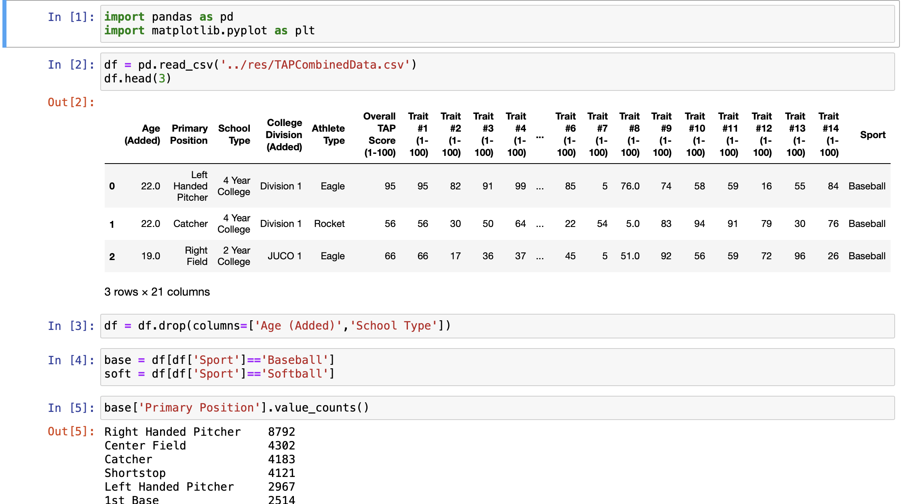

eam leader training and evaluating different machine learning models to predict if someone will have a stroke based on medical features (BMI, age, average glucose level etc.) using Python, Scikit-Learn, and Pandas
Team leader creating a database representing NFL players' statistics and salaries using Microsoft SQL Server Management Studio
Presented database with Java front end where users have set permissions, can search for certain players,order information by increasing or decreasing order, and edit player information
Data Mining Project

Applied data mining methods using Jupyter Notebook and Pandas to clean and analyze a dataset about baseball and softball player performance
Presented findings on a Firebase hosted website with dynamic data visualizations utilizing JavaScript and Danfo.js in a group of five